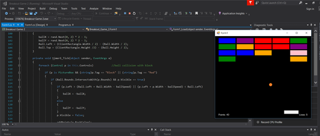

Breakout Game
This was a project undertaken across 3 months as part of my Component Programming Module in my first year of University. It was developed in C# Windows Forms. The final version of the game includes numerous features including randomised colouring of each block, endless generating levels that shows a running points tally as you progress through using both a tally in game as well as on each "Next Level" and "End Game" Screen.
